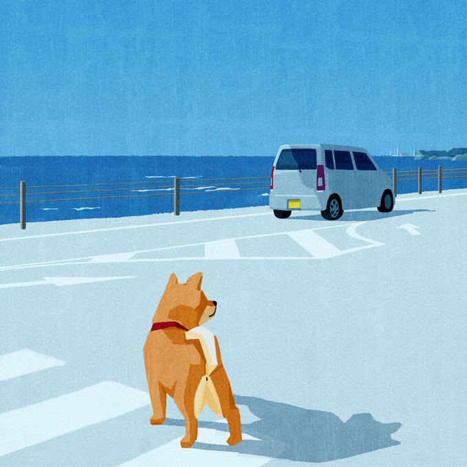

우리가 선택한 가족 입니다
유기 금지
반려동물을 계속 기를 수 없다고 해서 그 반려동물을 버려서는 안 됩니다(규제 「동물보호법」 제8조제4항).
버려진 반려동물은 길거리를 돌아다니다가 굶주림·질병·사고 등으로 몸이 약해져 죽음에 이를 수 있고, 구조되어 동물보호시설에 보호조치 되더라도 일정 기간이 지나면 관할 지방자치단체가 동물의 소유권을 취득하여 기증 및 분양하거나 경우에 따라서는 수의사에 의한 인도적 방법에 따른 처리가 될 수 있습니다(「동물보호법」 제20조, 제21조, 제22조 참조).
반려동물의 유기를 막기 위해서는 무엇보다도 반려동물이 죽음을 맞이할 때까지 평생 동안 적절히 보살피는 등 소유자가 보호자로서의 책임을 다하는 자세가 필요하며, 부득이한 경우에는 동물보호단체 등과 상담해 보시기 바랍니다.

반려동물을 유기하면?
이를 위반하여 반려동물을 버리면 300만원 이하의 벌금에 처해집니다(「동물보호법」 제46조제4항제1호).
또한, 맹견을 버리면 2년 이하의 징역 또는 2천만원 이하의 벌금에 처해집니다(「동물보호법」 제46조제2항제1호의2).
동물보호센터의 보호조치
도로·공원 등의 공공장소에서 소유자 없이 배회하거나 사람으로부터 내버려진 반려동물 중 관할 지방자치단체장에 의해 구조되어 관할 지방자치단체에서 설치·운영 또는 위탁한 동물보호센터로 옮겨집니다.
유기동물 공고
관할 지방자치단체에서 운영 또는 위탁한 동물보호센터에서는 구조한 동물을 보호하고 있는 경우에는 동물의 소유자와 일시적 또는 영구적으로 동물을 사육·관리 또는 보호하는 사람(이하에서는 “소유자 등”이라 함)이 보호조치 사실을 알 수 있도록 동물보호관리시스템에 7일 이상 그 사실을 공고하여야 합니다(「동물보호법」 제17조, 「동물보호법 시행령」 제7조제1항)
Maker
이경준
자료조사 및 메인페이지 & 팀원페이지 & 반려동물탭 프론트 제작